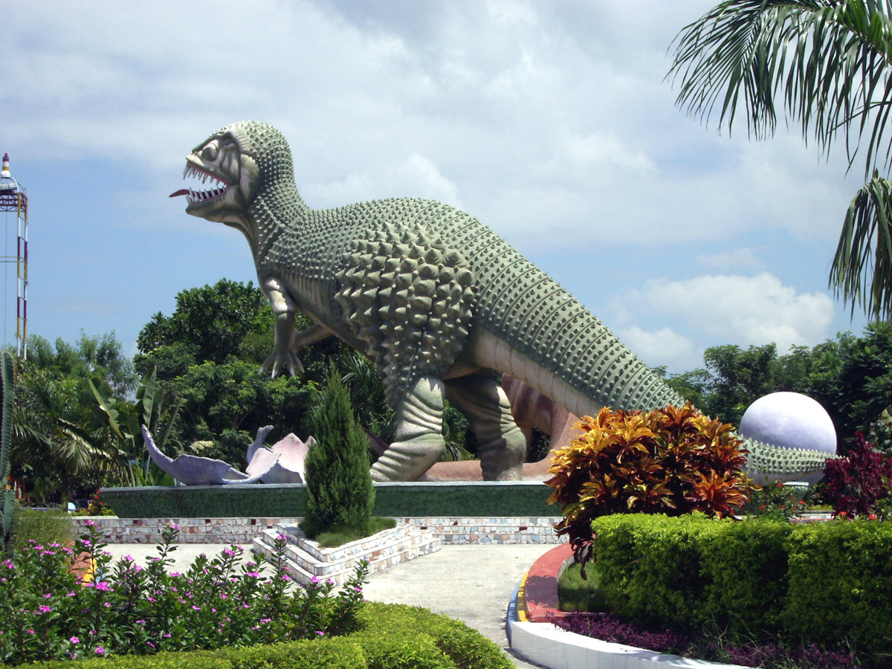
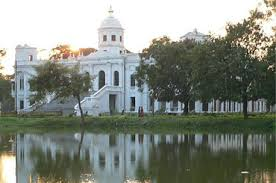
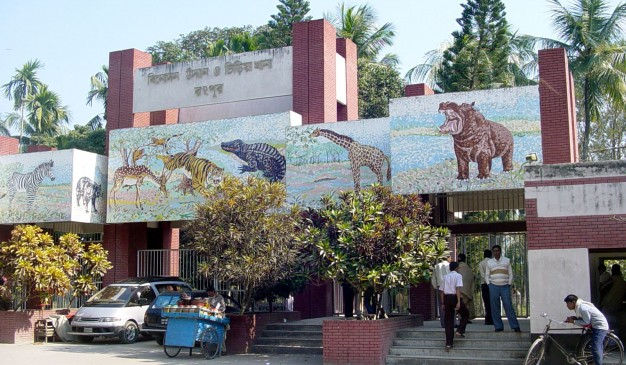

Welcome to rangpur vinnyajagat
Vinno jogot is a famous non-natural place in Bangladesh.It is Rangpur district which about 100 acres. Vinno Jogot beautify by main rides.
Tajhat Palace
-  Tajhat Palace, Tajhat Rajbari, is a historic palace of Bangladesh, located in Tajhat, Rangpur. This palace now holds the Rangpur museum. Tajhat Palace is situated three km. south-east of the city of Rangpur, on the outskirts of town
-  Recreation Park and Rangpur Zoo, or Rangpur Zoo is a Zoo located in Rangpur in Bangladesh. This is the largest zoo in the North Bengal.
Shirin Park
Event Space Shirin Park - informations, photos, map, comments and tips. Address: Pandardighi, Rangpur bd Flag Bangladesh ...